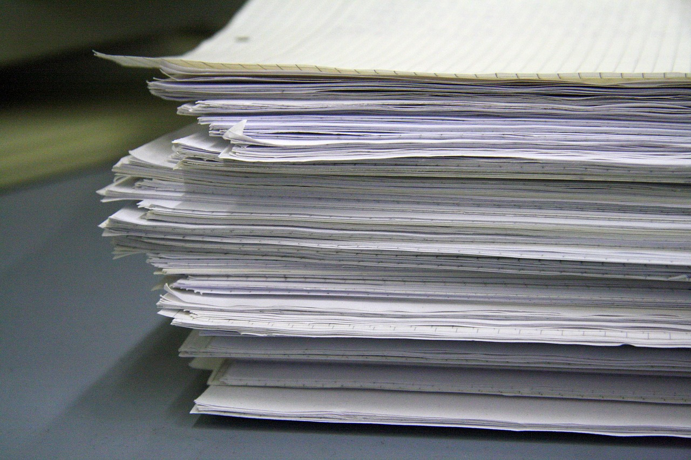

Il contesto, il problema,
la soluzione.
Perché serve uno strumento come Acta, e perché serve ora.
Obbligo normativo: registri digitali obbligatori
In Italia e in UE, la normativa richiede agli agricoltori di compilare e conservare registri dettagliati di tutte le attività in campo:
Obbligatorio per ogni uso di fitofarmaci.
Tracciabilità di concimi e ammendanti.
Specifiche regionali e direttiva UE 2000/60/CE sulla gestione dell'acqua.
Documentazione obbligatoria per accedere ai contributi europei.
Questi registri non sono opzionali: sono verificati dalle autorità competenti, da AGEA (Agenzia per le erogazioni in agricoltura), dalle Regioni e dai CAA (Centri di Assistenza Agricola). Chi non li tiene rischia sanzioni amministrative e perdita di contributi.
A partire dal 2027, la compilazione digitale del Quaderno di Campagna diventa obbligatoria. Oggi, molti agricoltori compilano ancora su carta, fogli sparsi, appunti difficili da trovare, ricostruzioni approssimative. Acta digitalizza completamente il processo: registrazione in campo via smartphone, archivio centralizzato, export automatico per la rendicontazione. Conformità garantita, senza stress.

Clima impazzito, decisioni consapevoli
Le variabilità climatiche degli ultimi anni hanno reso i calendari storici inaffidabili. Gelate tardive, siccità improvvise, piogge torrenziali arrivano quando meno te le aspetti. Seminare, irrigare, concimare al momento giusto richiede dati meteo accurati e previsioni a breve e medio termine, non la routine di una volta.
Acta integra dati meteo locali, modelli previsivi e agro-fenologia, permettendoti di scegliere il momento giusto per ogni operazione. Riduci il rischio climatico, ottimizzi l'acqua e i fertilizzanti, migliori la resa.
In un clima che cambia, l'informazione è il tuo vantaggio competitivo.
Meno tempo sulla carta, più margine per decisioni informate sul campo.
Vuoi capire se Acta può semplificare la burocrazia della tua azienda?
Scrivimi. Parliamo di come dati climatici e digitalizzazione possono lavorare per te.
Contattami